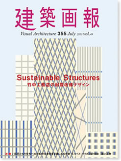

|

|
Sustainable Structures
竹中工務店の耐震改修デザイン
竹中工務店が1995年の阪神・淡路大震災以降に取り組んできた、耐震補強・改修の手法と技術を、6カテゴリー・32の実例で紹介。巻頭には、同社岡本達雄常務によるメッセージに続き、日本を代表する構造設計家、和田章氏・金箱温春氏による対談を掲載。
地震に備えて構造的な補強を行うだけではなく、デザイン性も保ち・考慮しながら建築物としての価値・魅力を向上させる、同社の深く幅広い取り組みが伝わる一冊となっている。
Visual Architecture 355 July 23 2013 vol.49
建築画報355号
2013年7月23日発刊
本文144ページ
仕様 A4変形判
定価 3,300円（税込）
ISBN978-4-901772-75-4
|
|
|
建築画報 Vol.355 目次
002 巻頭言｜竹中工務店の耐震改修デザイン
岡本達雄［竹中工務店常務執行役員］
006 巻頭対談｜構造設計家が考える耐震改修とデザイン
和田章［東京工業大学名誉教授］×金箱温春［金箱構造設計事務所代表］
014 ビジュアルで見る耐震改修デザイン
1｜見せる補強
Visible reinforcement
022 バットレス状耐震フレームによる外装表現｜明治学院大学ヘボン館
Exterior expression based on buttress like earthquake resistant frame｜
Meiji gakuin University Hepburn-kan
026 外殻フレームによる彫の深い外観｜大阪豊田ビル
Deeply indented facade using outer frame｜Osaka Toyota Bldg
030 H型鋼フレームによるファサードデザイン｜銀座昭興ビル
Facade design using H-beam frames｜Ginza Shoukou Building
032 PC圧着フレーム工法による短工期リニューアル｜清風学園1号館
Short-period renovation using PC compression frames｜Seifu Gakuen
034 トライアングルフレームによるイメージの継承｜千里阪急
Maintaining the impression of the building using triangle frames｜Senri Hankyu
036 外装バリューアップと一体化した耐震補強｜福岡パルコ
Seismic strengthening integrated with exterior improvement｜Fukuoka PARCO
040 耐震補強壁を利用した多様なデザイン｜名古屋センタービル本館
Diverse design using seismic retrofit shear walls｜Nagoya Center Building
044 自己圧着ブレースを利用した耐震改修デザイン｜竹中研修所「匠」
Seismic retrofit design using relocatable braces｜
Takenaka Learning Center "TAKUMI"
046 COLUMN01｜見せるデザイン補強
2｜免震レトロフィット
Seismic isolation retrofitting
050 居ながらできる中間階免震改修｜江東区庁舎
Mid-story seismic isolation retrofit carried out without disturbing business｜
Koto City Government Office Main building
054 集合住宅のレトロフィット免震｜王子ホームズ青山
Seismic isolation retrofit of apartment building｜OJI HOMES AOYAMA
056 土間構造の基礎上免震改修｜立正佼成会大聖堂
Base isolation retrofit of slab-on-grade structure｜
Rissho Kosei-kai Great Sacred Hall
058 日本最大規模の居ながらできる免震改修｜東京ダイヤビル
Japan's largest seismic isolation retrofit carried out without disturbing business｜
TOKYO Dia Building
060 中間階免震を用いた垂直増築｜海城学園2号館
Vertical addition using mid-story seismic isolation｜Kaijo Junior& Senior High School
062 COLUMN02｜免震レトロフィット技術の発展
3｜保存再生と耐震技術
Preservation/restoration and earthquake-resistant technology
066 既存適正評価とレンガ建築の保存｜西本願寺伝道院
Due diligence assessment of existing building and preservation of brick architecture｜
Nishi Honganji Dendo-in
070 仕上げの内部にすべり込ませる補強｜赤坂迎賓館
Reinforcement that slides into the finished interior｜
State Guest House, Akasaka Palace
074 組積造躯体内で完結する補強｜清泉女子大学本館
Method that completes reinforcement inside masonry framework｜
SEISEN University
076 空間と一体化した耐震補強｜日本橋髙島屋
Seismic strengthening integral with the space｜Takashimaya Nihombashi Store
078 意匠性を守る耐震補強｜ジェームス邸
Seismic strengthening that preserves design｜James-Tei
080 ファサードの表情を豊かにする外殻フレーム補強｜大阪女学院北校舎
Outer frame reinforcement enriches facade｜OSAKA JOGAKUIN UNIVERSITY
082 木造空間が持つ潜在的価値の再編｜堀之内妙法寺本堂
Rebuilding the potential value of a timbered space｜Myohoji Temple
084 国宝に応用された先端解析技術｜唐招提寺金堂
Applying advanced analysis technology to a national treasure｜Toshodaiji Temple
088 COLUMN03｜レンガ造における補強工法の変遷
089 COLUMN04｜1930年代建築の革新性
090 COLUMN05｜伝統木造建築の制震補強
4｜コンバージョンと減築
Conversion and downsizing
094 病院建物をオフィス空間へ魅力再生｜岡山きらめきプラザ
Restoring the charm of a hospital building as office space｜Kirameki Plaza
098 オフィスビルを賃貸住宅へコンバージョン｜ラティス芝浦
Conversion of an office building into rental apartments｜Lattice shibaura
100 減築による大型ホテルの再生事業｜
かんざんじ温泉華咲の湯・ホテルウェルシーズン浜名湖
Restoring hotel complex by downsizing｜HOTEL WELLSEASON HAMANAKO
102 減築による耐震性向上と魅力の再生｜勝美住宅加古川支店
Improving earthquake safety and restoring charm by downsizing｜
Katsumi Jyutaku kakogawa branch
5｜環境デザインとの融合
Fusion with environmental design
106 近代産業遺産の再生と活用｜トヨタテクノミュージアム 産業技術記念館
Restoring and utilizing modern industrial heritage｜
TOYOTA Commemorative Museum of Industry and Technology
110 光と風を導く窓と融合した耐震補強｜聖心女子学院プール棟
Seismic strengthening integrated with windows for light and ventilation｜
Seishin Joshi Gakuin
112 柱補強と傾斜窓のオーバーレイ｜KDX博多南ビル
Overlaying slanting windows on column reinforcement｜KDX Hakata Minami Building
114 全面改修によるグリーンビルティング化｜ローム京都駅前ビル
Full-scale renovation to create a Green Building｜ROHM Kyoto Ekimae Building
116 空間の再構成による付加価値の向上｜ひばりが丘団地ストック再生実証試験
Increasing added value by restructuring space｜
Research on Renovation Project in UR Hibarigaoka Estate
6｜震災復興と新たな試み
Earthquake reconstruction and new initiatives
120 コア補強によるシンボルの再生｜東北大学片平史料館
Restoring a symbolic building through core reinforcement｜
TOHOKU UNIVERSITY ARCHIVES
122 再現した木造建物の免震保存｜旧神戸居留地十五番館
Restoration and seismic isolation of a wooden building｜
The 15th on old residence ground pavilion in Kobe
124 COLUMN06｜竹中環境コンセプトモデル建築コンペティション2010
128 Topic｜あべのハルカス 本館改修にともなう性能設計
132 建築概要
138 巨匠たちの住宅～20世紀の住空間を定義した名作群⑥
ルイス・バラガン邸1948 淵上正幸
142 information